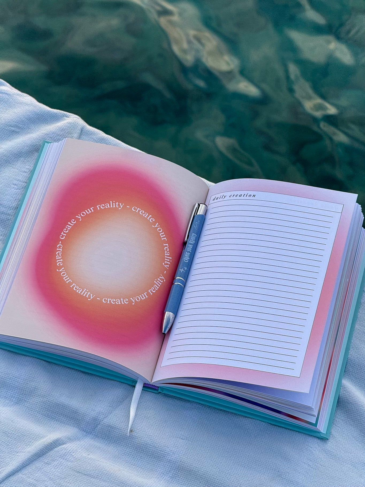

journal essentials
waves
ons verhaal
mandje (0)
waves of creation
experience the wave of creation
Create a
new era
of you
journals en kaartendecks voor je dagelijkse moment met jezelf
open de journal
